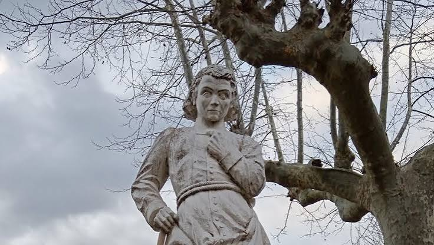
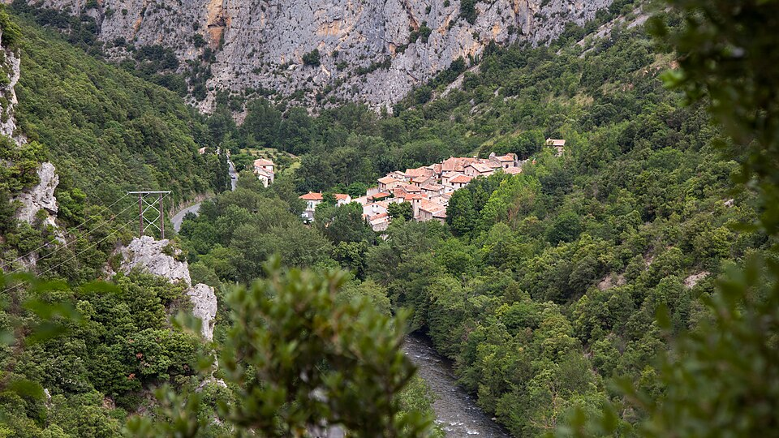

Saint-Martin-Lys
le curé qui perça
la montagne

⟹ Histoire de clocher ⟸
Pendant des siècles, un mur de roche a coupé Saint-Martin-Lys du reste du monde. Un curé, armé de la seule bonne volonté de ses paroissiens, a décidé de le percer. Il lui a fallu une vie entière.
Saint-Martin-Lys se niche dans la haute vallée de l'Aude, au sud de Quillan, entre deux gorges et sous deux montagnes. On y accède par un pont sur l'Aude. Juste en aval, la rivière s'est creusé un passage de quelques kilomètres entre des falaises vertigineuses : le défilé de Pierre-Lys. Pendant des siècles, aucune route ne le franchit. Un énorme rocher, le « Roc du Diable », barre l'entrée ; seuls de mauvais sentiers de montagne permettent de le contourner.

Le lieu a pourtant une longue histoire. Une abbaye Saint-Martin y est mentionnée dès 898, quand le moine Leuva lui donne une vigne à Cailla. Elle reçoit de nombreux dons dans la vicomté de Fenouillèdes, et le pape Agapet II confirme ses possessions en 954. Les moines y cultivent la vigne, l'olivier et les céréales.
Félix Armand naît à Quillan en 1742, dans une famille pauvre et pieuse : son père est tanneur et sonne les cloches de la ville. Envoyé étudier à Perpignan vers l'âge de 12 ans, il entre en 1762 au grand séminaire d'Alet. Ordonné prêtre, il est vicaire à Quillan, curé de Galinagues à partir de 1771, puis vicaire de Belvianes. Il succède enfin à l'abbé Bernu comme curé de Saint-Martin-Lys, où il restera 49 ans.
Il y trouve un village isolé et pauvre. Il y introduit la pomme de terre, puis la vaccination, et crée la première caisse de bienfaisance. Mais il comprend surtout que, tant que la montagne restera fermée, rien ne changera.
Peu après son installation, il lance les travaux. Avec les habitants de Saint-Martin, à la pioche et à la barre à mine, il entreprend de tailler un chemin le long de la rivière, à flanc de falaise. Il faut environ cinq ans de travail et de quêtes pour ouvrir un premier sentier. Puis vient le Roc du Diable, le dernier obstacle avant Belvianes : on le perce d'un tunnel d'une dizaine de mètres, qui, une fois élargi, devient le « Trou du Curé ». Au total, plus d'un kilomètre et demi de passage est taillé dans la roche.

L'argent vient des dons, puis de l'évêque d'Alet, Charles de La Cropte de Chanterac, qui finance largement le chantier. La Révolution l'interrompt : prêtre réfractaire, Félix Armand s'exile quatre ans à Sabadell, en Catalogne. Les habitants signent une pétition pour son retour. Revenu, il doit encore se cacher, notamment dans la grotte du Gal, chaque fois qu'on annonce les gendarmes. Les travaux reprennent difficilement en 1799.
À la Toussaint 1814, une procession conduit les paroissiens jusqu'au « Trou du Curé » pour célébrer la fin des travaux.
Le curé ne s'arrête pas là : jusqu'à sa mort, il améliore la route et fait creuser un chemin muletier. En 1821, avec l'appui du duc de La Rochefoucauld, la route devient départementale. Napoléon Ier, puis Louis XVIII, y ont contribué de leur cassette. Félix Armand reçoit la Légion d'honneur. Il meurt à Saint-Martin-Lys en 1823 et lègue la plupart de ses biens aux pauvres de la paroisse.
Après lui, la route est prolongée vers Axat, Mont-Louis et le Roussillon. Elle devient route nationale en 1861 et apporte la prospérité aux villages de la haute vallée. Saint-Martin-Lys atteint 448 habitants en 1896. Aujourd'hui, la commune en compte 23, et c'est la route de l'abbé (la D 117) qui mène de Quillan à Perpignan à travers les gorges.
Le « Trou du Curé » est le court tunnel percé dans le Roc du Diable, à la sortie du défilé de Pierre-Lys en direction de Quillan. Il est toujours emprunté par la route D 117, entre Quillan et Axat. Juste à côté, le passage est si étroit que la route semble suspendue au-dessus de l'Aude.
On peut s'y arrêter pour mesurer l'exploit : des parois de plusieurs dizaines de mètres, une rivière en contrebas, et ce trou taillé à la main par des paysans menés par leur curé. Un peu plus loin, à Quillan, une sculpture évoque le tunnel et une statue de pierre rend hommage à l'abbé Armand.
Selon la tradition, des moines massacrés en août 1573 pendant les guerres de Religion reviendraient chanter les nuits du 15 au 16 août et du 1er au 2 novembre. Certains y voient un effet du vent dans les gorges.
Revenu clandestinement d'exil, le curé se cachait dans une grotte troglodyte, la grotte du Gal, chaque fois que les forces de l'ordre étaient annoncées.
Une nuit, alerté le premier par le garde forestier, l'abbé organisa lui-même les bûcherons contre l'incendie de la forêt des Fanges. Le préfet salua son action.
La statue en bronze de l'abbé, élevée à Quillan d'après un modèle de Jean-Marie Bonnassieux, a été fondue par l'occupant en 1942. Une copie en pierre l'a remplacée.